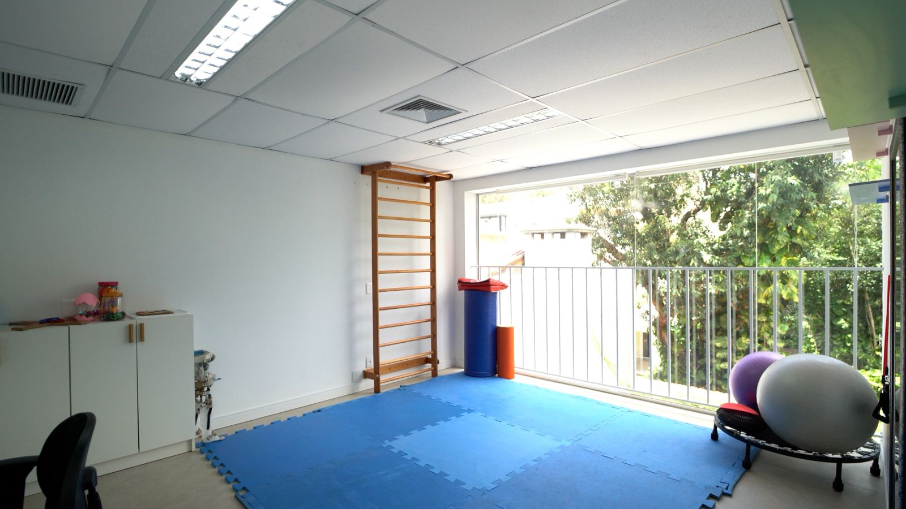
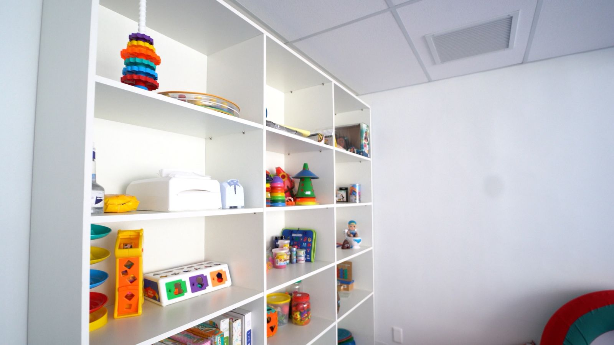
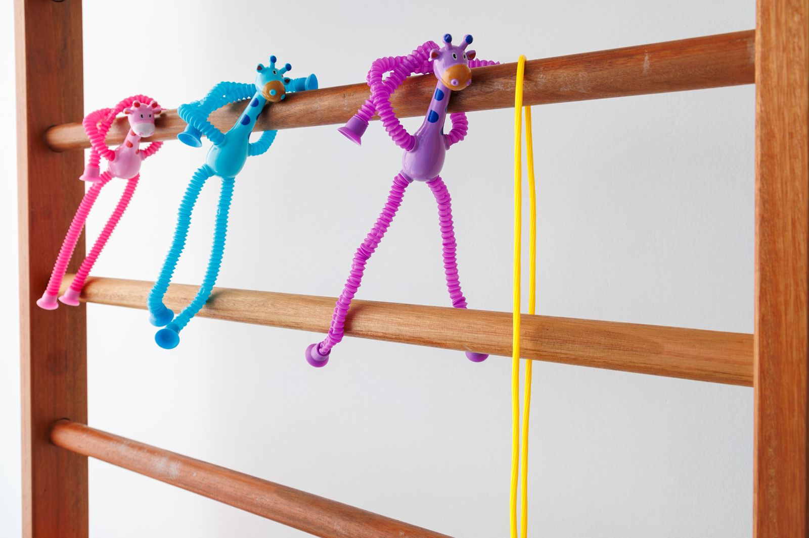
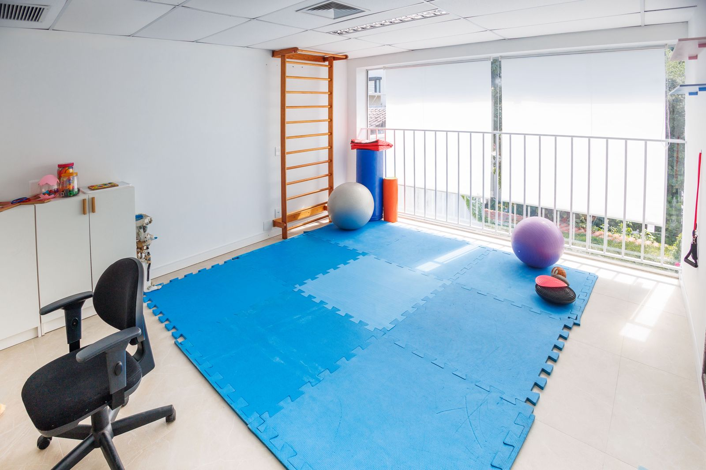
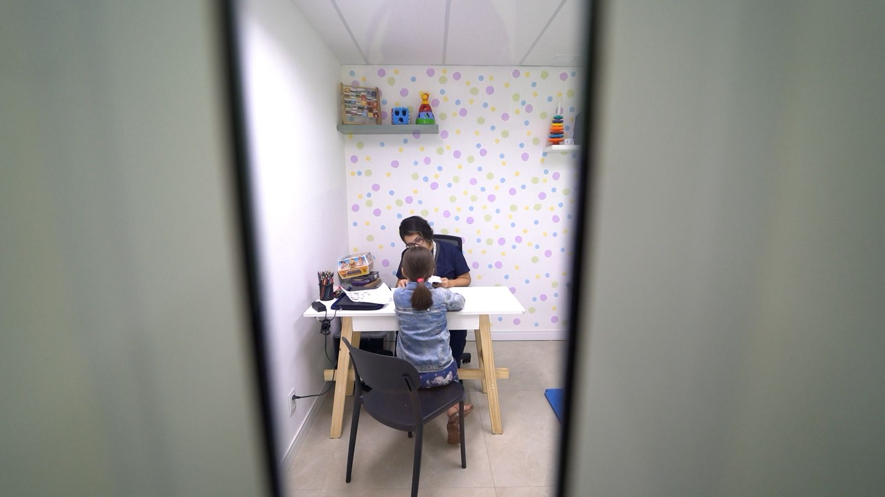

Psicólogo pela Unimed
Desenvolvimento emocional, comportamental, cognitivo e social, com profissionais formados em ABA, TCC e neurodesenvolvimento.
Agendar psicologia →Atendemos Unimed em Porto Alegre
Psicologia, fonoaudiologia, terapia ocupacional, terapia ABA e mais seis áreas, no Moinhos de Vento. Você chama a gente no WhatsApp e a nossa equipe cuida da parte burocrática com o seu plano.


Você não está sozinho nessa
Muitas famílias chegam até nós depois de semanas tentando encaixar as peças sozinhas.
Na unidade Quintino Bocaiúva, as nove especialidades atendem pela Unimed e trabalham juntas num plano único para cada paciente.
É mais simples do que parece
Você faz só o primeiro contato. O resto, a gente encaminha com você.
Conte um pouco sobre o paciente e envie os dados da carteirinha Unimed. Nossa equipe confirma a cobertura do seu plano.
Orientamos sobre pedido médico, documentos e autorizações, e agendamos o acolhimento inicial para conhecer a história da família.
A equipe monta o plano terapêutico individual e o paciente inicia as terapias, com reavaliação a cada semestre.
Todas pela Unimed
Da comunicação ao movimento, do comportamento à alimentação. Escolha a especialidade e fale direto com a equipe.
Desenvolvimento emocional, comportamental, cognitivo e social, com profissionais formados em ABA, TCC e neurodesenvolvimento.
Agendar psicologia →Linguagem, fala, comunicação e funções orofaciais. Equipe com formação em CAA, PROMPT, Multigestos e disfagia.
Agendar fono →Independência no dia a dia, coordenação motora e processamento sensorial, com Integração Sensorial de Ayres.
Agendar TO →Apoio na escola, em casa e na comunidade, com supervisão técnica, para levar cada conquista para a vida real.
Saber mais →Investiga habilidades cognitivas e comportamentais para apoiar o diagnóstico e o planejamento do tratamento.
Agendar avaliação →Entende como a pessoa aprende e o que está travando a aprendizagem, com orientação para família e escola.
Saber mais →Apoio aos processos de aprendizagem: alfabetização, funções executivas e educação inclusiva.
Saber mais →Habilidades motoras, equilíbrio, postura e mobilidade, com formação em Bobath e desenvolvimento motor.
Saber mais →Seletividade alimentar trabalhada por TO e fono juntas, para uma relação mais tranquila com a comida.
Saber mais →Por que famílias confiam na HD360
Mais de 70 especialistas construindo um plano único, em vez de terapias soltas em lugares diferentes.
Terapia ABA, modelo Denver e outras metodologias reconhecidas, aplicadas com rigor e carinho.
Salas temáticas e espaços sensoriais e de regulação emocional, pensados para reduzir o estresse.
Orientação parental, coworking para responsáveis e um canal de diálogo sempre aberto.
A evolução é acompanhada de perto e o plano terapêutico é revisto a cada seis meses.
Unidade Quintino Bocaiúva, com estrutura completa e acessibilidade total.
Mande uma mensagem e a nossa equipe responde de segunda a sexta, das 8h às 19h.
Onde atendemos Unimed
Cerca de 700 m² distribuídos em ambientes temáticos e totalmente planejados, onde cada espaço tem um propósito terapêutico e um toque lúdico que faz a pessoa se sentir em casa.





Endereço
R. Quintino Bocaiúva, 451
Moinhos de Vento · Porto Alegre/RS
Horário
Segunda a sexta, das 8h às 19h
Idades
De 1 a 72 anos: crianças, adolescentes e adultos
Telefone e WhatsApp
Guia para famílias
Respostas diretas para as dúvidas que mais ouvimos de quem está começando o tratamento pelo plano.
Desde julho de 2022, duas normas da ANS mudaram a vida de muitas famílias. A RN 539 passou a obrigar os planos a cobrir o método ou a técnica indicada pelo médico para o Transtorno do Espectro Autista e outros transtornos globais do desenvolvimento. Já a RN 541 acabou com o limite de sessões com psicólogos, fonoaudiólogos, terapeutas ocupacionais e fisioterapeutas.
Na prática, a quantidade de sessões passa a seguir a prescrição e o plano terapêutico, e não um teto fixo por ano. Isso vale para os beneficiários Unimed como para os de outros planos regulados pela ANS.
O caminho mais comum no autismo começa no consultório médico. O neuropediatra (ou o psiquiatra, no caso de adolescentes e adultos) avalia, fecha o diagnóstico e indica as terapias. É essa indicação, com o pedido médico, que o plano costuma pedir para liberar os atendimentos.
Depois da consulta, muitas famílias ficam com uma lista de terapias nas mãos e nenhuma ideia de onde fazer tudo pela Unimed. É aqui que a HD360 entra: as terapias e avaliações indicadas pelo seu médico podem ser feitas na unidade Quintino Bocaiúva, com uma equipe que troca informações entre si e com o médico que acompanha o paciente.
Ainda não tem consulta nem diagnóstico? Tudo bem. O acolhimento inicial não depende de laudo, e a nossa equipe orienta o caminho, inclusive sobre a avaliação neuropsicológica.
Saiu da consulta com a indicação de terapias?
Começar as terapiasEncontrar um psicólogo que atenda pela Unimed é uma coisa. Encontrar um que tenha formação específica em autismo é outra. Na HD360, a psicologia trabalha o desenvolvimento emocional, comportamental, cognitivo e social, com profissionais formados em Análise do Comportamento Aplicada (ABA), Terapia Cognitivo-Comportamental e neurodesenvolvimento.
A terapia ABA é aplicada também em ambientes naturais: brincando, cozinhando, convivendo. Assim, cada habilidade conquistada vira autonomia dentro e fora da clínica.
A fonoaudiologia cuida da comunicação em todas as formas: linguagem, fala e funções orofaciais. Para quem ainda não fala ou fala pouco, a Comunicação Alternativa e Ampliada (CAA) abre caminhos. A equipe tem formação em PROMPT, Multigestos, motricidade orofacial, disfagia e dificuldades alimentares na infância.
A terapia ocupacional trabalha a independência nas atividades do dia a dia, como vestir-se, comer e brincar, além da coordenação motora e do processamento sensorial. Sensibilidade a barulhos, texturas ou movimentos são temas frequentes, e a equipe usa a Integração Sensorial de Ayres. Junto com a fono, a TO também conduz a terapia alimentar para quem tem seletividade.
Quando cada terapia acontece num endereço diferente, a família vira a ponte entre os profissionais e o paciente perde tempo no trânsito. Com a equipe reunida, psicólogo, fono e TO alinham objetivos no mesmo Plano de Desenvolvimento Individual (PDI), revisado a cada semestre.
Quer montar o plano completo pela Unimed?
Falar com a equipePerguntas frequentes
Sim. A unidade Quintino Bocaiúva, no Moinhos de Vento, atende beneficiários Unimed nas nove especialidades da clínica. No primeiro contato pelo WhatsApp nossa equipe confirma a cobertura do seu plano e orienta cada etapa.
Não para o acolhimento inicial. Se ainda não há diagnóstico, a equipe orienta o caminho, inclusive sobre avaliação neuropsicológica, e sobre a documentação que o plano costuma pedir para liberar as terapias.
Atendemos beneficiários Unimed. Como as regras podem variar entre cooperativas e contratos, envie os dados da sua carteirinha no WhatsApp e confirmamos a cobertura antes de qualquer agendamento.
Desde julho de 2022, as normas da ANS (RN 539 e RN 541) deixaram de limitar o número de sessões com psicólogos, fonoaudiólogos, terapeutas ocupacionais e fisioterapeutas, e passaram a exigir a cobertura do método indicado pelo médico para o TEA. A quantidade de sessões segue a prescrição e o plano terapêutico.
A HD360 é uma clínica de terapias e avaliações. O diagnóstico médico e a prescrição costumam vir do neuropediatra ou psiquiatra que acompanha o paciente; as terapias indicadas por ele podem ser feitas aqui, pela Unimed, com a equipe integrada.
A unidade Quintino Bocaiúva atende de 1 a 72 anos: crianças, adolescentes e adultos.

Use o seu plano Unimed numa clínica feita para o autismo. Chame a gente e dê o primeiro passo hoje.